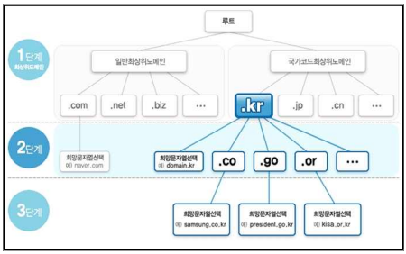

DNS
1.1 DNS란 무엇인가
DNS(Domain Name System)는 도메인 이름을 IP 주소로 변환하는 계층적 분산 데이터베이스 시스템이다.
네트워크 통신은 IP 기반으로 이루어진다.
하지만 사용자는 숫자 대신 이름을 사용한다.
예:
www.example.com → 192.168.80.100DNS는 이 매핑 정보를 전 세계적으로 분산된 서버에 저장하고 위임 구조로 관리한다.
1.2 DNS 계층 구조
도메인은 트리 구조이다.
{kind=link}

www.example.com.구성 요소:
.→ Root
com→ TLD
example→ 2차 도메인
www→ 호스트 이름
오른쪽이 상위, 왼쪽이 하위이다.
DNS 질의는 루트에서 시작하여 점점 내려가는 구조이다.
1.3 도메인은 어디에서 관리되는가
실제 인터넷에서는 다음과 같은 구조로 관리된다.
- Root → ICANN 관리
- TLD(.com, .net, .kr 등) → 각 등록기관 관리
- 사용자 → Registrar(등록 대행업체)를 통해 도메인 임대
도메인은 “구매”가 아니라 “임대” 개념이다.
보통 1년 단위 갱신한다.
1.4 정방향 / 역방향 조회
| 구분 | 정방향 | 역방향 |
|---|---|---|
| 방향 | 이름 → IP | IP → 이름 |
| 레코드 | A / AAAA | PTR |
| 필수 여부 | 필수 | 선택적 |
PTR은 DNS 동작에 필수는 아니다.
하지만 메일 서버 운영 시 매우 중요하다.
1.5 nslookup과 PTR 관계
nslookup 실행 시:
Server: ns1.example.com이 이름은 해당 DNS 서버 IP에 대한 PTR 레코드가 있어야 출력된다.
PTR이 없으면 IP로 표시된다.
DNS 동작과는 무관하다.
2. Caching Name Server

2.1 이론
Caching Name Server는 재귀 질의를 수행하고 응답을 TTL 동안 캐시에 저장한다.
동작 흐름:
- 클라이언트 질의
- 루트 → TLD → 권한 서버 질의
- 결과 수신
- TTL 동안 캐시 저장
- 동일 질의는 캐시 응답
TTL(Time To Live)은 캐시 유지 시간이다.
2.2 보안 주의
재귀를 외부에 개방하면 Open Resolver가 된다.
위험:
- DNS 증폭 공격
- DDoS 반사 공격
따라서 allow-recursion은 내부망으로 제한해야 한다.
2.3 실습: Caching DNS (192.168.80.110)
설치
sudo apt install -y bind9 bind9-utils bind9-dnsutils| 패키지 | 설명 |
|---|---|
| bind9 | DNS 서버 프로그램(named) |
| bind9-utils | DNS 관리 도구 |
| bind9-dnsutils | dig, nslookup 같은 테스트 도구 |
BIND 서비스 확인
설치 후 서비스 상태 확인
systemctl status bind9정상 실행 상태 예시
Active: active (running)서비스 시작 / 중지
sudo systemctl start bind9
sudo systemctl stop bind9
sudo systemctl restart bind9부팅 시 자동 실행
sudo systemctl enable bind9BIND 설정 파일 구조
BIND 설정은 /etc/bind 디렉토리에 존재한다.
확인
ls /etc/bind예시
named.conf
named.conf.options
named.conf.local
named.conf.default-zones| 파일 | 역할 |
|---|---|
| named.conf | 메인 설정 파일 |
| named.conf.options | DNS 서버 기본 옵션 |
| named.conf.local | 사용자 정의 zone |
| named.conf.default-zones | 기본 zone |
vi /etc/bind/named.conf.optionsoptions {
directory "/var/cache/bind";
dnssec-validation auto;
listen-on-v6 { any; };
};테스트
dig @192.168.80.110 www.google.com| 요소 | 의미 |
|---|---|
| @127.0.0.1 | 질의할 DNS 서버 |
| google.com | 조회할 도메인 |
두 번째 실행 시 응답이 빨라지면 캐시 정상이다.
DNS가 사용하는 전송계층 프로토콜
| 프로토콜 | 포트번호 | 용도 |
|---|---|---|
| UDP | 53 | 일반 DNS 질의 |
| TCP | 53 | zone transfer, 큰 응답 |
3. Authoritative Name Server
recursion은 재귀 질의 기능으로 DNS 서버가 클라이언트를 대신하여 도메인 조회를 수행하는 기능이다.
DNS 서버가 관리하지 않는 도메인에 대한 질의가 들어오면 루트 DNS부터 시작하여 TLD DNS, Authoritative DNS 순서로 질의를 진행하고 결과를 클라이언트에게 반환한다.
BIND의 기본 설정은 recursion 활성 상태이다.
필요한 경우 options 블록에서 recursion을 비활성화할 수 있다.
설정 예시
options {
recursion no;
};이렇게 설정하면
DNS 서버는 자신이 관리하는 zone 정보만 응답함
외부 도메인 조회는 수행하지 않음즉
Resolver 기능 제거
Authoritative DNS 역할만 수행3.1 이론
Authoritative DNS는 특정 Zone의 원본 데이터를 보유하고 정답을 제공한다.
특징:
- 재귀 수행하지 않음
- 자신이 관리하는 Zone만 응답
- SOA 포함
- NS 레코드 정의 필수
3.2 Domain vs Zone
- Domain → 이름 공간
- Zone → DNS 서버가 관리하는 단위
example.com과 test.com은 각각 독립 Zone이다.
4. Zone 등록
4.1 Zone(Domain)
/etc/named.rfc1912.zones 파일에 도메인을 등록한다.
zone "example.com" IN {
type master;
file "example.zone";
};해당 zone 파일은 /var/named 디렉토리에 위치해야함.
4.1 Zone File이란
Zone File은 DNS의 실제 데이터베이스 파일이다.
위치:
/etc/bind4.2 기본 구조
$TTL 86400
@ IN SOA ns1.example.com. admin.example.com. (
2026022101
3600
900
604800
86400
)
IN NS ns1.example.com.
ns1 IN A 192.168.80.53
www IN A 192.168.80.1004.3 zone transfer 항목 설명
| 항목 | 의미 |
|---|---|
| Serial | 변경 버전 번호 |
| Refresh | Slave 확인 주기 |
| Retry | 재시도 간격 |
| Expire | 만료 시간 |
| Minimum | 기본 TTL |
Serial 증가하지 않으면 Slave는 갱신하지 않는다.
4.4 주요 레코드
- A → IPv4
- PTR → 역방향
- NS → 권한 서버
- CNAME → 별칭
- MX → 메일 서버
5. Authoritative DNS 실습 (example.com, test.com)
환경
| 역할 | IP |
|---|---|
| Master | 192.168.80.110 |
example.com Zone 정의
zone "example.com" IN {
type master;
file "example.com.zone";
};test.com Zone 정의
zone "test.com" IN {
type master;
file "test.com.zone";
};example.com Zone File
$TTL 86400
@ IN SOA ns1.example.com. admin.example.com. (
2026022101
3600
900
604800
86400
)
IN NS ns1.example.com.
ns1 IN A 192.168.80.53
www IN A 192.168.80.100test.com Zone File
$TTL 86400
@ IN SOA ns1.test.com. admin.test.com. (
2026022101
3600
900
604800
86400
)
IN NS ns1.test.com.
ns1 IN A 192.168.80.53
www IN A 192.168.80.110문법 점검
named-checkconf
named-checkzone example.com /var/named/example.com.zone
named-checkzone test.com /var/named/test.com.zone재시작
systemctl restart named6. 사설 도메인 테스트
클라이언트 DNS 서버를 192.168.80.53으로 설정한다.
dig www.example.com
dig www.test.com
ping www.example.com7. Zone Transfer
Zone Transfer는 Master의 Zone 데이터를 Slave로 복제하는 과정이다.
종류:
- AXFR → 전체 전송
- IXFR → 증분 전송
Slave는 SOA Serial 비교 후 동기화한다.
TCP 53 사용한다.
8. Master / Slave 실습
환경
| 역할 | IP |
|---|---|
| Master | 192.168.80.53 |
| Slave | 192.168.80.54 |
Master 설정
zone "example.com" IN {
type master;
file "example.com.zone";
allow-transfer { 192.168.80.54; };
};Slave 설정
zone "example.com" IN {
type slave;
file "slaves/example.com.zone";
masters { 192.168.80.53; };
};Slave 시작
systemctl restart namedSerial 변경 테스트
- Master Serial 증가
- Master 재시작
- Slave 로그 확인
journalctl -u named -n 509. named-chroot
9.1 chroot란 무엇인가
chroot는 프로세스의 루트 디렉터리를 변경하는 보안 기술이다.
일반적으로 리눅스의 루트 디렉터리는:
/하지만 chroot를 적용하면 특정 디렉터리를 루트처럼 인식하게 만든다.
예:
/var/named/chrootnamed 프로세스 입장에서는 이 경로가 /가 된다.
즉,
실제 경로: /var/named/chroot/etc/named.conf
named가 보는 경로: /etc/named.conf9.2 왜 DNS 서버에 chroot를 사용하는가
DNS 서버는 외부와 직접 통신하는 서비스이다.
취약점 발생 시:
- 파일 시스템 접근
- 시스템 파일 탈취
- 권한 상승 시도
위험이 발생할 수 있다.
chroot를 적용하면:
- 접근 가능한 디렉터리 범위 제한
- 시스템 전체 파일 접근 차단
- 침해 발생 시 피해 범위 최소화
즉, 보안 격리 목적이다.
10. named-chroot 구조 이해
전통적 chroot 구조:
/var/named/chroot/
├── etc/
│ └── named.conf
├── var/
│ └── named/
│ ├── example.com.zone
│ └── slaves/
├── dev/
└── run/named는 이 디렉터리를 루트처럼 인식한다.